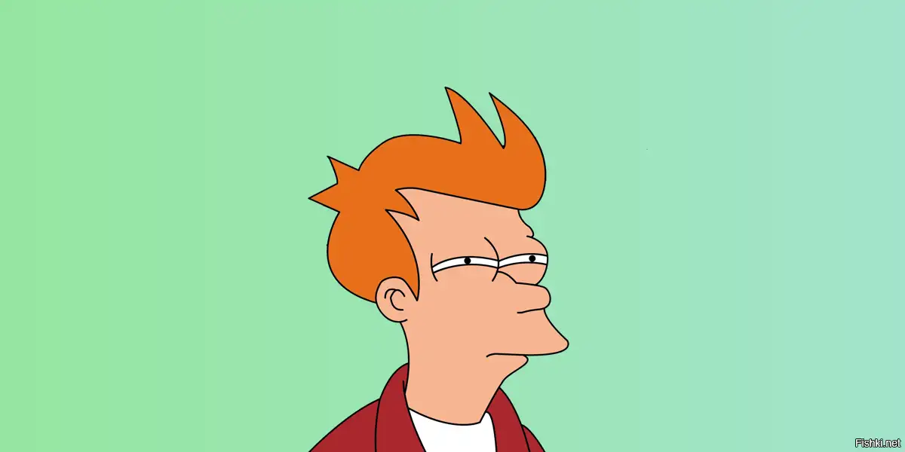

Филип Дж. Фрай - ленивый и беззаботный курьер из 20-го века, который случайно заморожен и просыпается в 31-м веке.
Бендер Б. Родригес - циничный и саркастичный робот, который любит выпить и покурить, несмотря на то, что он робот.
Джон Зойберг - добродушный, но неуклюжий крабоподобный инопланетянин, который работает врачом в компании "Межпланетный экспресс".
Филип Дж. Фрай - ленивый и беззаботный курьер из 20-го века, который случайно заморожен и просыпается в 31-м веке.